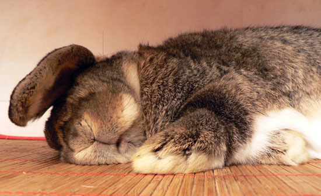

Journée type du lapin
Voici une petite vidéo qui vous montrera le quotidien d'un lapin. Bon on va pas se mentir, il ne fait rien de la journée. Un vrai glandeur. Il mange, il dort, comme le chat en fait.
Le lapin a un rythme de vie particulier, conséquence directe du rythme de vie de son cousin sauvage. Il vit principalement le jour avec deux grandes périodes d'activité : tôt le matin et à la tombée de la nuit. Tout au long de la journée, il alterne les repas (une vingtaine par jour) et les siestes. C'est au crépuscule qu'il est le plus actif et que vous pouvez le plus jouer avec lui.
Premier pic d'activité : Le lever du soleil
Aux premiers rayons du soleil, le lapin s'active. Ce qui signifie que l'été vous avez tout intérêt à fermer les volets si vous ne voulez pas être réveillé trop tôt ! Aussitôt réveillé, le lapin se met au travail. Il parcourt son territoire pour contrôler que tout est normal.
Une fois ce petit rituel accompli, il se met en quête de nourriture. Si sa gamelle est vide, vous risquez d'être réveillé plus tôt que prévu car monsieur lapin n'est pas toujours très patient et n'hésite pas à frapper sa gamelle contre le sol si le petit déjeuner n'arrive pas assez rapidement . Il aime avoir le ventre plein avant de se recoucher. C'est pendant cette période d'intense activité que le lapin est le plus intéressant à observer, il renifle, observe, écoute, joue, simule des poursuites ou des combats, marque son territoire du menton. Il s'intéresse à son environnement et aux activités qui s'y déroulent. C'est le moment de servir le premier repas de la journée.
Après ces folles activités, monsieur lapin se repose, à moins qu'il y ait de l'agitation dans la maison et que sa curiosité l'emporte sur son envie de faire une petite sieste. La matinée se déroule calmement en alternant repas, balades et siestes.
L'après midi ressemble bien souvent à ça :
Le principal souci du lapin étant de trouver la meilleure position pour roupiller jusqu'au soir. Vous allez être tranquille.
Vers 17-18h l'activité redémarre lentement pour atteindre un pic vers 21h-22h. Le lapin recommence le même rituel : exploration du territoire, courses, jeux et bien entendu repas !
Le soir le lapin fait son deuxième repas important de la journée, cela ne signifie pas qu'il ne mange que 2 fois. En réalité il passe sa journée à manger (les jeunes font jusqu'à 40 repas par jour). Manger est une activité importante et nécessaire au lapin, ce grignotage perpétuel favorisant la mobilité de son système digestif et l'usure de ses dents
Le lapin n'a pas vraiment d'horaire pour se coucher, il se plie à votre rythme et à celui des saisons. L'été, il a tendance à se coucher plus tard et apprécie de se promener dehors pour profiter de la fraîcheur. L'hiver, il est plus casanier et à tendance à hiberner un peu.
Et la nuit ?
Le lapin de garenne sort peu le jour et a donc une vie nocturne assez intense, ce n'est pas toujours le cas du lapin de compagnie. Celui-ci s'adapte à l'emploi du temps des humains. Des études scientifiques* ont montré que le lapin domestique avait un rythme de vie légèrement différent du lapin sauvage même lorsqu'il était mis dans les mêmes conditions de vie. Il a légèrement modifié son rythme d'activité pour l'adapter à celui de l'homme. Il dort plus la nuit et est plus actif le jour que le lapin de garenne. La nuit le lapin connait aussi une période de repos. Certains lapins assez nerveux ne dorment vraiment que la nuit quand ils sont seuls. Dans la journée ils se couchent mais ne dorment pas. D'autres lapins qui dorment beaucoup l'après-midi restent très actifs la nuit. On peut considérer que la nuit est un temps de repos même si le lapin ne se couche pas des heures durant. Il m'est arrivé de faire des nuits blanches pendant lesquelles les lapins n'ont pas dormi par curiosité et le lendemain ils étaient épuisés. Preuve que la nuit, habituellement, ils dorment bien! Le rythme de vie dépend aussi de l'âge du lapin, les jeunes ayant tendance à être un peu plus nerveux et les vieux plus calmes. Le lapin est aussi capable de bousculer ses horaires pour s'adapter aux vôtres et profiter de votre présence.